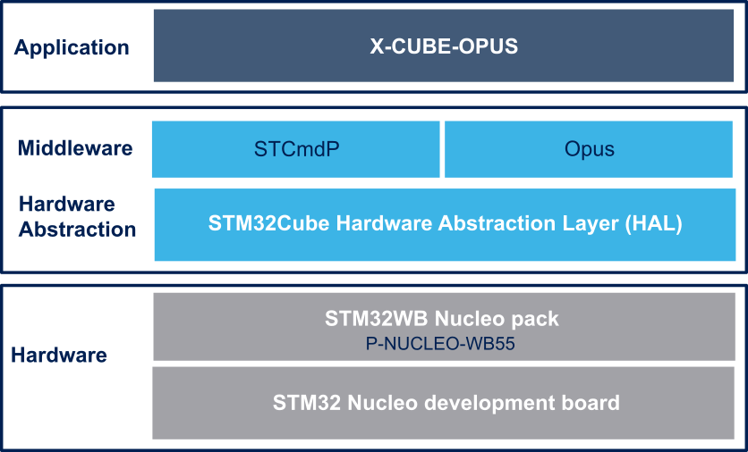

Release Notes for X-CUBE-OPUS
Copyright © 2020 STMicroelectronics
License
This software package is licensed by ST under SLA0095 (Mix ODE+OSS+3rd-party Software License Agreement); You may not use this component except in compliance with the License. You may obtain a copy of the License at:
https://www.st.com/sla0095
Purpose
The X-CUBE-OPUS expansion software package allows the user to evaluate Opus performance depending on his target application, facilitating the choice of the correct STM32 and easily integrate the audio codec
X-CUBE-OPUS software features:
- Complete tool to evaluate and profile the advanced Opus audio codec with each possible configuration on different STM32 family (ARM Cortex M4, M7, M33)
- Firmware example that shows how to use and integrate Opus on different STM32 family.
- Sample application (compatible with Python 3.7) that allows to configure Opus, send audio data to STM32 Nucleo board and receive profiling results.
- Third-party Opus v1.3.1 (downloadable from https://www.opus-codec.org): an open, royalty-free and highly versatile audio codec that is standardized by the Internet Engineering Task Force (IETF) as RFC 6716
- Custom serial protocol to easily communicate between STM32 Nucleo board and Host using dedicated command
- Sample implementation available on NUCLEO-F413ZH, NUCLEO-H743ZI, NUCLEO-F746ZG, NUCLEO-L552ZE-Q or P-NUCLEO-WB55 development board
- Easy portability across different MCU families, thanks to STM32Cube
- Free, user-friendly license terms
The figure below shows the overall architecture: 
Here is the list of references to the user documents:
- Data Brief: X-CUBE-OPUS Data Brief
- User Manual: X-CUBE-OPUS User Manual
- STM32Cube: STM32Cube Ecosystem
- STM32Nucleo board: STM32 Nucleo Boards
Update history
Main changes
First release
First Release of X-CUBE-OPUS: Opus evaluation and profiling software expansion for STM32Cube.
Contents
Documentation
| Name | Version | License | Document |
|---|---|---|---|
| X-CUBE-OPUS API Description | 1.0.0 | SLA0055 | CHM |
Drivers
| Name | Version | License | Release note |
|---|---|---|---|
| STM32F4xx CMSIS | 2.6.5 | BSD-3-Clause | release note |
| STM32F4xx HAL | 1.7.8 | BSD-3-Clause | release note |
| BSP STM32F4xx_Nucleo_144 | 1.0.3 | BSD-3-Clause | release note |
| STM32F7xx CMSIS | 1.2.5 | BSD-3-Clause | release note |
| STM32F7xx HAL | 1.2.8 | BSD-3-Clause | release note |
| BSP STM32F7xx_Nucleo_144 | 1.0.0 | BSD-3-Clause | release note |
| STM32H7xx CMSIS | 1.9.0 | BSD-3-Clause | release note |
| STM32H7xx HAL | 1.9.0 | BSD-3-Clause | release note |
| BSP STM32H7xx_Nucleo | 1.1.0 | BSD-3-Clause | release note |
| STM32L5xx CMSIS | 1.0.3 | Apache License v2.0 | release note |
| STM32L5xx HAL | 1.0.3 | BSD-3-Clause | release note |
| BSP STM32L5xx_Nucleo | 1.0.2 | BSD-3-Clause | release note |
| STM32WBxx CMSIS | 1.6.0 | BSD-3-Clause | release note |
| STM32WBxx HAL | 1.6.0 | BSD-3-Clause | release note |
| BSP P-NUCLEO-WB55.Nucleo | 1.0.1 | BSD-3-Clause | release note |
Middlewares
| Name | Version | License | Release note |
|---|---|---|---|
| STCmdP | 1.0.0 | BSD-3-Clause | release note |
| Opus | 1.3.1 | BSD-3-Clause | readme |
Projects
| Name | Version | License | Release note |
|---|---|---|---|
| OpusProfilingTool | 1.0.0 | SLA0094 | release note |
Utilities
| Name | Version | License | Document |
|---|---|---|---|
| OPT SW Control | 1.0.0 | Apache License v2.0 | Quick Start Guide |
Known limitations
Development toolchains and compilers
- IAR Embedded Workbench for ARM (EWARM) toolchain V8.50.5 + STLink/V2
- RealView Microcontroller Development Kit (MDK-ARM) toolchain V5.31 + ST-LINK/V2
- STM32CubeIDE toolchain v1.4.2 + ST-LINK/V2
Supported devices and boards
- STM32F413ZH devices and NUCLEO-F413ZH board
- STM32F746ZG devices and NUCLEO-F746ZG board
- STM32H743ZI devices and NUCLEO-H743ZI board
- STM32L552ZE devices and NUCLEO-L552ZE-Q board
- STM32WB55RG devices and P-NUCLEO-WB55 board